Where I Joined
An advocacy platform built in an emergency — fast sprints, no research. A post every 50 seconds across 15,000+ volunteers, 1.6M+ posts, 1.2B+ views. Platform-wide lifetime figures, not outcomes of the work below.
Two surveys, 579 and 384 respondents, found the users weren't 16–30 as assumed. They were 50+. The team was mid-redesign for that audience when I arrived; the direction was theirs. The design team split by platform — the UX designer owned mobile, I owned desktop and all remaining resolutions.
The Problems I Found
The product existed on one screen size.
Mobile-only, and broken on a wide screen. Nobody had raised it. I proposed the responsive expansion and argued for it internally — the one problem here I found before any research.
The other four came out of interviews I had to push for. The team trusted surveys and heatmaps. Initiating the study and selecting the 7 participants — by age, usage and tenure — were mine; the UX designer and I wrote the guide together, sat the sessions together, and worked through the findings as a pair. The guide was deliberately open: what do you like, what don't you.
- Users were declining content silently. Not the feature — the content. It didn't always sit closely enough with their politics and values to carry their name.
- No proof of impact. Volunteers shared with no evidence any of it landed.
- No way to report a fault. Problems moved by hand — raised in an interview, messaged to me after, or spotted by an admin in the organization's WhatsApp group and sometimes never passed on.
- The analytics were wrong. Failed shares counted as successes in the database. It had run for months.
How We Found the Solutions
“I look critically at the posts you send, and a lot of things I simply don't share. A lot of things.”
— UNPROMPTED. NOBODY ASKED HER THAT.Premade Comments had launched weeks earlier, so I asked about it. Usage turned out to be the smaller question — some used it, some didn't. Alignment was the real one, and it set the requirement: content the user chooses, by subject and by group.
To personalise content you have to know the user.
To know the user you need an account.
One finding built the whole account layer.
Registration and the Personal Profile weren't roadmap items. They were the price of personalization — and with a 50+ audience, that price had to be low enough to pay.
The Product
DESIGNED AND SHIPPED
Sharing Preferences
The silent rejection becomes an explicit, editable choice — subjects on one tab, groups on the other.
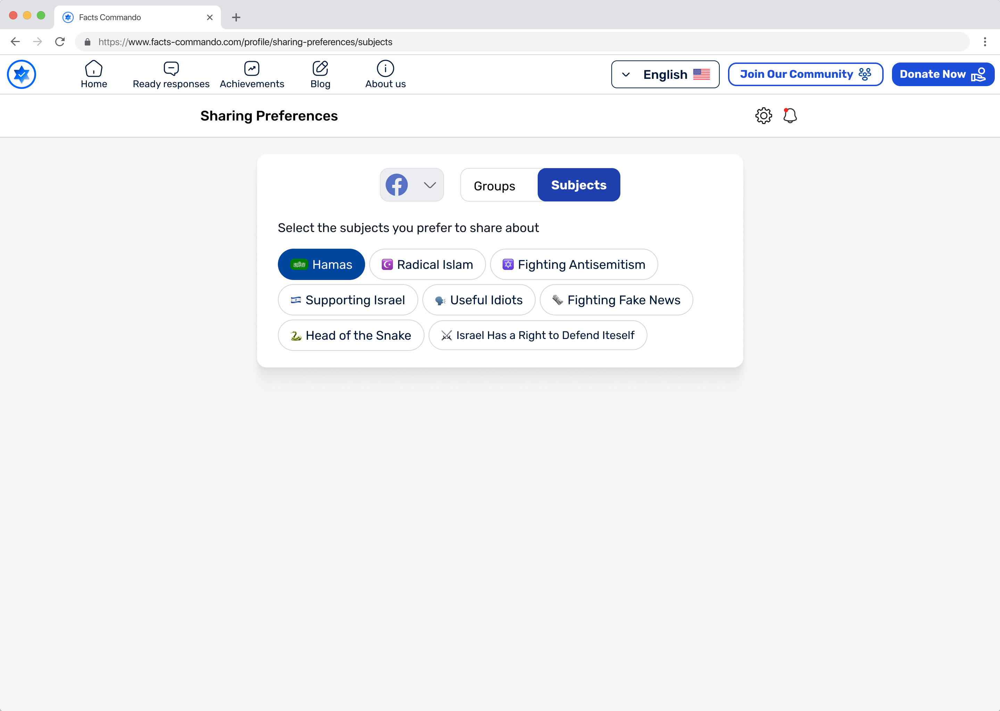
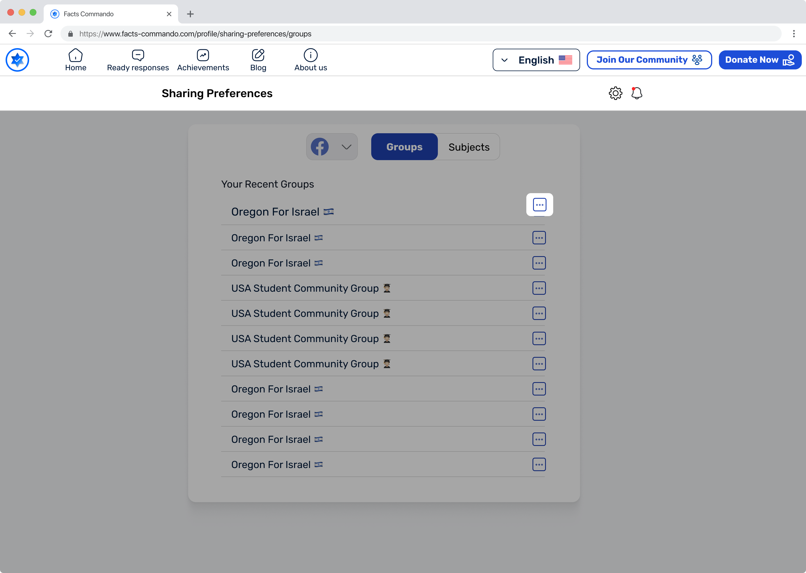
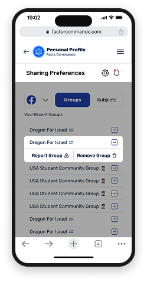
Registration
Split the ask. Three fields at the door, or one tap with Google. Birth year and country come later in the profile, once the account is worth having.
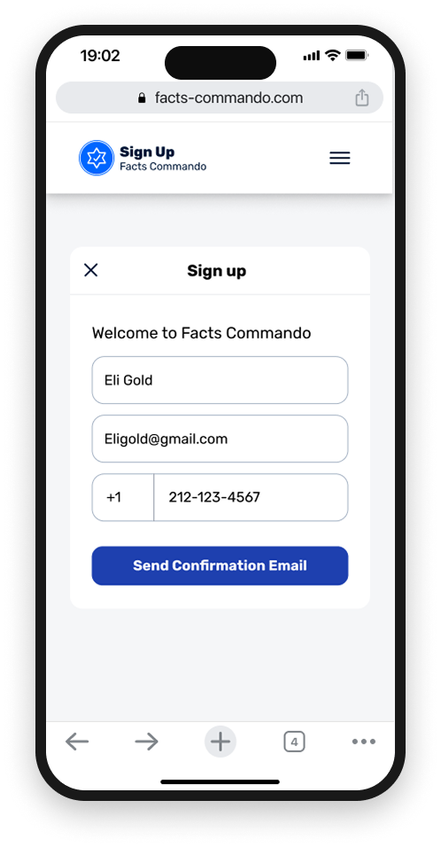
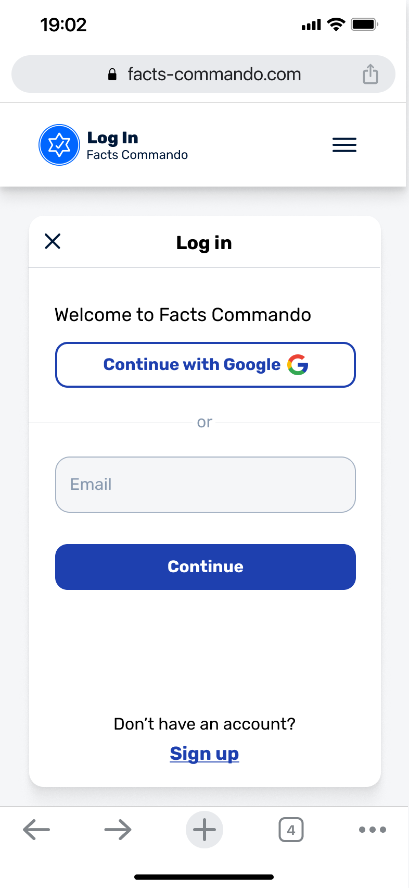
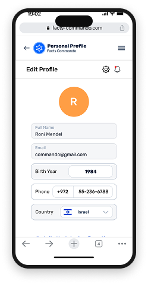
Personal Profile
The volunteer's own exposure, replies and weekly shares — their impact, not the platform's aggregate.
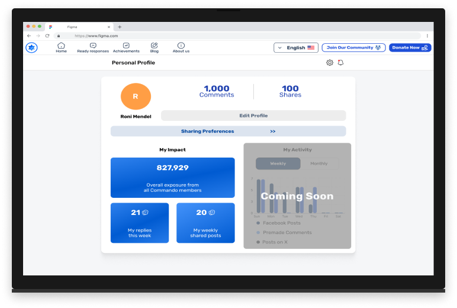
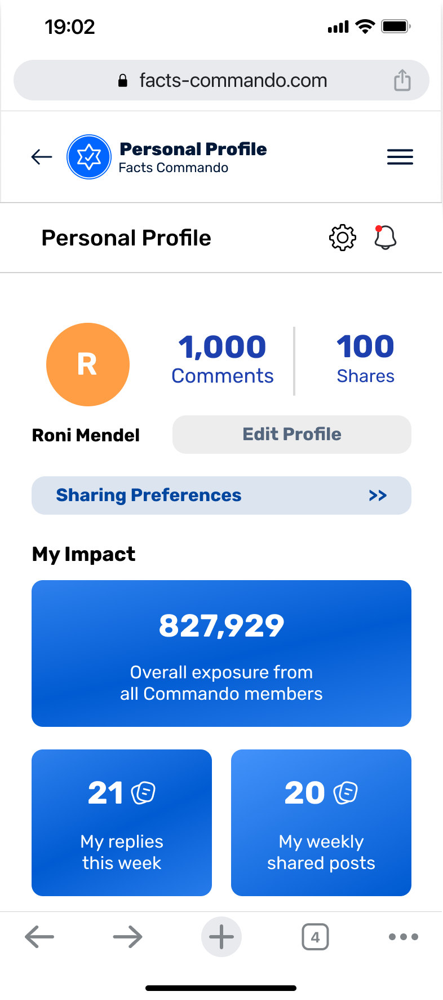
Reporting
Named reasons instead of a free-text box, so reports arrive already sorted — technical errors on one side, group-level problems like bans and denied posts on the other. No relay, no one to remember.
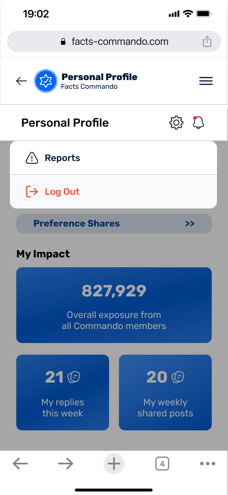
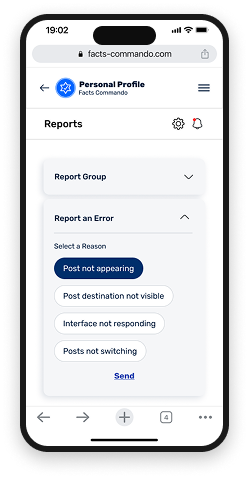
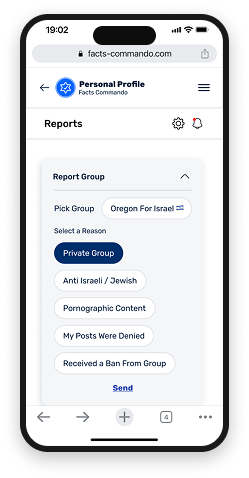
Update Notifications
For a 50+ audience an unannounced change reads as broken. Changes now arrive as information, before the encounter.
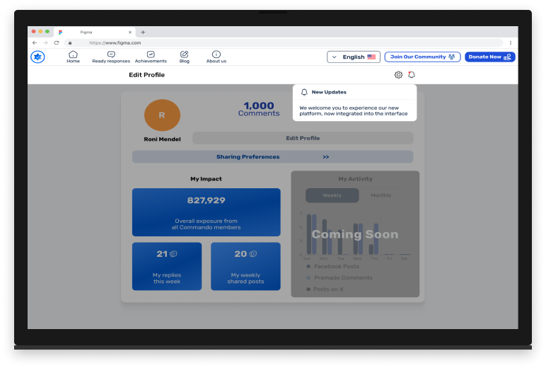
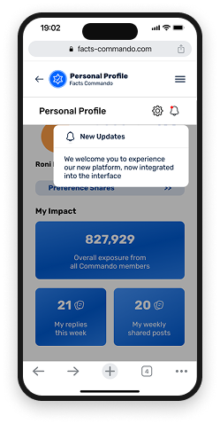
Seven Resolutions, Two Directions
The existing design system extended into a range it was never built for — button sizing, type scale, interaction states — plus a desktop navigation menu with no precedent in the product, in Hebrew RTL and English LTR throughout.
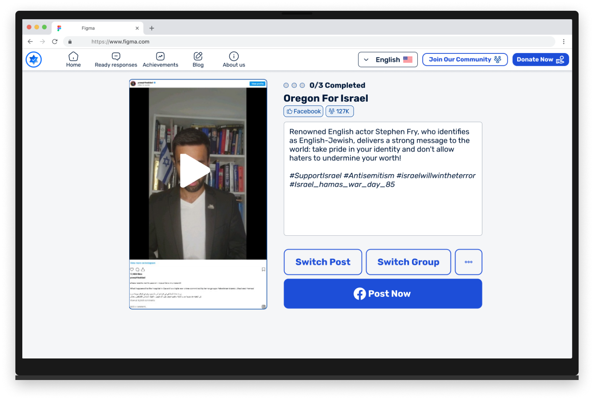
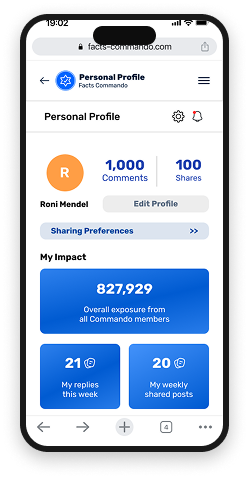
THE SAME SYSTEM AT BOTH ENDS OF THE RANGE
Premade Comments & the Switcher
Specified with the UX designer, designed by platform. The product lives inside Facebook, so every share leaves it — the confirmation has to tell the user exactly where they now are.
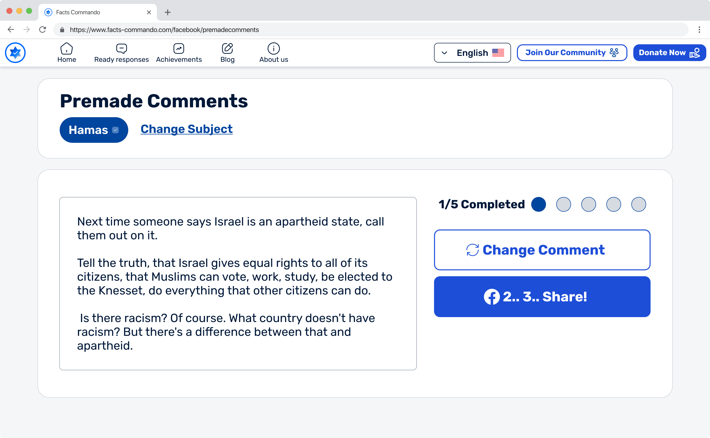
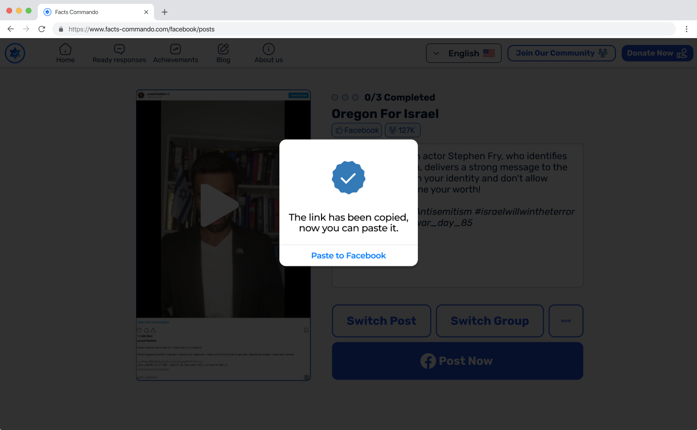
What Held, and What Didn't
The Personal Profile went into production months after I left for Tel Aviv University — shipped with zero changes to my original design files. The team later added a third network to the Switcher; the pattern absorbed it without a redesign, which is a better test of a structure than how it looked at launch.
Desktop reached 2% of sessions against 98% mobile (Clarity, May 2025). The interviews explained it: the way in was a WhatsApp group link, and a link in WhatsApp opens on a phone. Most users never knew a wide-screen version existed.
The constraint was distribution, not interface.
What I'd Do Differently
I expanded before I checked how people arrive.
The gap was real; the fix was wrong. Clarity would have shown a mobile-only base coming through one external link — the right first move was to bridge the path, not widen the destination. I don't regret making the argument. I regret not validating the assumption under it.
Data tells you what happens.
Only people tell you why.
The finding that redirected this product came to a question I never asked. The same seven conversations found a metric reporting success for shares that never happened. Quantitative data can be confidently wrong — only people tell you which part.